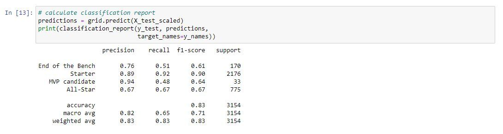

Model Overviews:
For each of the models listed below we assigned our target value (y) as NBA PER Range. This was not originally part of the dataset, rather created by our team by binning specific PER ranges in order to determine the caliber of each player. As mentioned previously, this was inspired by John Hollinger's PER Range which he created in order to combine all of the player's contributions into one statistical category. Although there is a specific and complicated formula for this, our model is designed to predict based off the most popular statistical categories that most people are familiar with. This includes: PPG, APG, RPG, SPG, BPG, FG%, FT%, 3P%.
Random Forest Model
First model we created was a random forest model for the purpose of seeing how each of the data values impacted our category distribution. After assigning the data and targets, we split the data into two testing samples and then scaled the data in using a MinMaxScalar in order to normalize the range of variables that will be pased through the model. If you take a look below, you will see the break down of how each data impacts this particular model and what is important to in order for our machine to predict the classifiers of PER Range
SVM Model
Using those same target and data values from the random forest model, we applied this to a SVM model in order to see how precise each category can be predicted. After calibrating our SVM model, our team applied a hyperparameter tuning component (GridSearchCV) in order to ensure that our model was performing at the highest possible degree. Once the newer model was trained and fit we calculated a classification report and received a precision measurement and support variable that demonstrated how well our model could predict each NBA PER Range as well as the the number of units per category respectively.
Deep Learning Model
Finally, we created a Deep Learning model in order to test how accurately our machine could predict each category and manage the loss of the model. In order to make sure that our data would be able to pass through our machine, this required a label encoder to transform our NBA PER Ranges into a numeric value. After doing so, we passed in our 8 input dimensions and used 100 hidden layers in order to train the model and receive the output layer. Finally, we examined the loss and accuracy of the deep learning model and found that this model had the highest accuracy of 84% out of the three models tested.